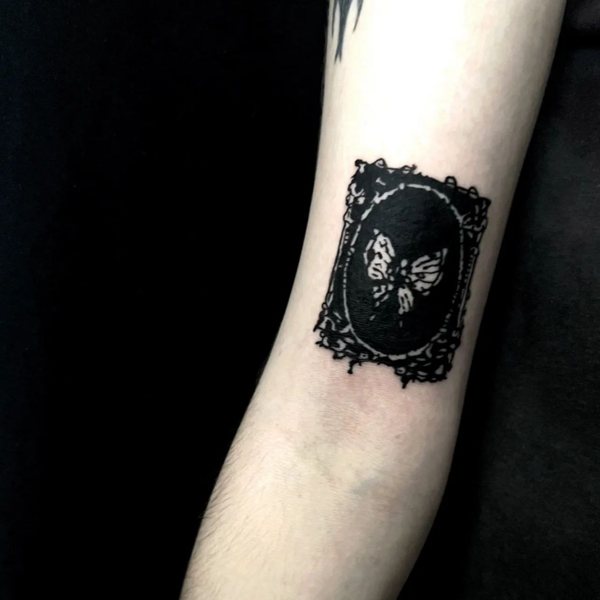
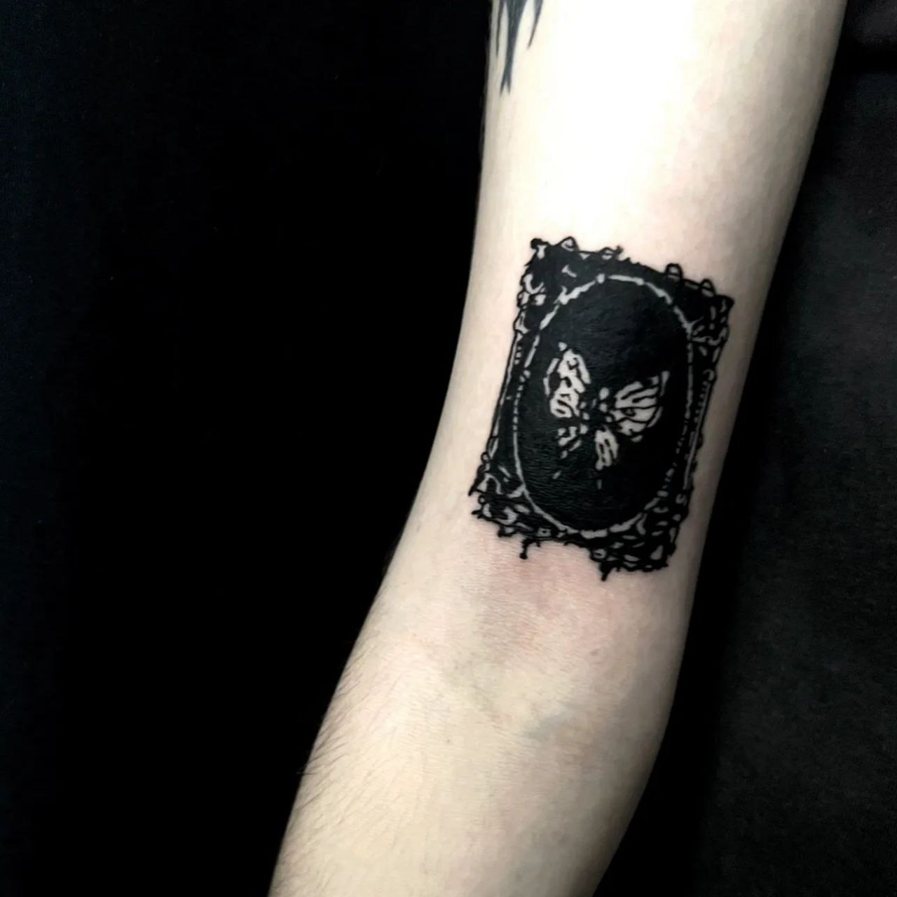

Народився 21 лютого 2004 року в селі Семигинів Стрийського району Львівської області. З дитинства мав хист до творчості, займався музикою, танцям, малюванням. В 2010 році вступив в Семигинівську СЗОШ І-ІІІ ст. Брав активну участь в шкільному житті: військово-спортивних іграх, змаганнях, олімпіадах. У віці 15 років зрозумів, що хочу займатися творчістю. Більшість вільного часу приділяв самонавчанню, що не давало потішного результату. В 2021 році почав відвідувати приватні уроки малювання в Стрийському вищому художньому професійному училищі, де за 2 місяці опанував базові навички з академічного рисунку та живопису.
В 2021 році вступив в Львівський фаховий коледж декоративного і ужиткового мистецтва ім. І. Труша на факультет графічного дизайну. Життя та навчання у Львові кардинально змінило мій світогляд та відкрило перед мною нові можливості. Графічний дизайн не став справою, з якою я б хотів пов'язати життя, проте здобуті знання я зміг застосувати в справі, якою горів ще з підліткового віку- татуювання. В 2023 році я влаштувався на першу офіційну роботу, на посаду кондитера. За літо заробив достатньо коштів, за які придбав тату обладнання. В лютому зробив перше тутуювання на людині, моделлю стала Мельник Олександра, яка й навчала мене цьому. В майбутньому планую пов'язати своє життя з тату індустрією, відкрити власну студію.

 

На даний момент працюю в нічній зміні в мережі ресторанів МакДональдс, поєднуючи роботу з навчанням та особистим життям. Прибуток намагаюся інвестувати в творчість, саморозвиток, самовдосконалення. В подальшому планую зайнятися фотографією, ціанотипією та шовкографією. Моєю ціллю в житті є досягнення гармонії між професійними обов'язками та особистим життям, приділяючи достатньо часу сім'ї та самореалізації. Хочу стати експертом у своїй галузі та зробити значний внесок у розвиток професійної спільноти. І найголовніше- хочу жити на повну, будучи щасливою та незалежною людиною.
1. В дитинстві хотів стати священиком, в період з 6 до 9 класу був членом вівтарного братства.
2. Моя мати- естонка. Батько- нащадок українців та американців польського походження.
3. Через невідомі причини, написання мого прізвища латинкою було зміненим із Brous на Brus. Моя сім'я досі зберігає документи прапрадідуся із старим написанням прізвища.

4. Маю тактильного котика якого звати Том. Але я його називаю Томік, Томасік, Томуся, Томаська.